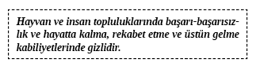
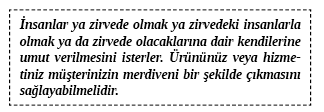

16. BÖLÜM - ZİRVEYE KİM ÇIKAR?
Evrim psikolojisi, biz insanların belli genetik ve evrim prensiplerine bağlı şekilde birimizle nasıl bağlantılı olduğumuza dair bir çalışmadır. Bu bölüm insan iletişimi ve kimlerin zirveye çıktığını anlamanın son noktasını ele alıyor.
Ürünlerini almaya eğilim göstermemizi sağlayacak, her birimizde var olan genetik programlamaya nasıl ulaşılacağını bilen milyarlarca dolarlık şirketler çok azdır. Şimdi bu uluslararası başarıların bazı sırlarını öğreneceksiniz. Dünyanın en iyi reklamcılığı, davranışlarımıza göre değil daha ziyade değiştirilmesi imkânsız olan DNA’mıza göre düzenlenir. Bu bölümde öğrenecekleriniz, şirket pazarlamasında ve günlük hayatınızı pazarlamada yaptığımız araştırmayı nasıl uygulayacağımızdır.
Toplumumuzdaki bütün insanlar yiyeceğe, giyeceğe ve barınağa ihtiyaç duyar. Bunlar doğuştan gelen programlardır. Hayatta kalmalıyız. Kışın giyeceğe gereksinim duyarız. Doğuştan gelen güvenlik ve bölgesel sahiplik ihtiyaçlarımızı karşılamak için barınağımız olmalıdır. Bunun ötesinde çok az doğuştan gelen ihtiyaç vardır ama müşteri yetişkin olduğunda da davranışlarını yönlendirecek çok fazla doğuştan gelen eğilim vardır.
Birçok Kişinin İyiliğine Hitap Edin
Genlerimiz sadece hayatta kalmamız ve kendimize bakmamız için eğilimler üretmez, parçası olduğumuz geniş grupların güçlü dürtülerini yönetir ve sürdürür. Aslında herkesin genetik yapısı, geniş grupların devam etmesi ve başarılı olmasına programlanmıştır.
Birinin bir çocuğu kurtarmak için yanan binaya doğru koştuğu bir haber izlediniz mi? Bu yalnızca fedakâr bir davranış değil, çoğumuzun da genetik programlamasının bir kısmıdır. Grubumuzdaki başka kişileri önemseme dürtüsü çok yoğundur.
Neredeyse bütün insanlar aşağıdakilerin çıkarına davranmaya programlanmıştır:
• Kendileri
• Aileleri
• Grupları
• Toplum
• Tanrı
Satış görevlisinin yalnızca müşterinin çıkarına göre davranıyorsa büyük bir hata içindedir. Oysa ki ürünlerinin, müşterinin ailesine, çalışanlarına, vatandaşlığına, kilise cemaatine, bir bütün olarak topluma ve hatta Tanrı’ya nasıl yardım edeceğine kanalize olmalıdır. 1998’de bilim adamları insanların beyinlerinin bir kısmının ‘Tanrısal Bir Varlık’ ile iletişim kurarken harekete geçtiğini keşfettiler.
Daha büyük genetik ihtiyaçlara nasıl cevap verileceğini gösteren bir McDonald’s reklamı vardır. Reklam şarkısında “Bugün bir arayı hak ettin. Bu yüzden kalk ve McDonalds’a git” sözleri geçiyor. Reklamda bütün gün çalışan bir adam var. Reklam şarkısı da bu adamın molaya ihtiyacı olduğunu ima ediyor. Yine de motive edici şey kişisel memnuniyet değil. Motive edici şey hep birlikte McDonalds’a giden baba-anne-çocuklardır.
Rekabet Hayatta Kalmak için İtici Bir Güçtür
Evrimsel psikoloji alanı bize toplumdaki kazananları ve kaybedenleri doğal olarak seçen şeyin bireyler ve gruplar arasında rekabet olduğunu öğretti. Müşterilerinizden ürünlerinizi ve hizmetlerinizi satın almalarını istediğinizde ürünlerinizin ve hizmetlerinizin ona toplumda, grubu içinde veya rakiplerine karşı avantaj sağlayacağı gerekçesiyle yaklaşıyorsunuz. Bireyin yapısı rekabetçi bir şekilde hayatta kalmaktır. Dünyanın en iyi rekabetçileri en zengin olan bireylerdir. Bill Gates, Ted Turner, Warren Buffet... Bunların hepsi çok iyi insanlardır yine de mükemmel rekabetçilerdir. Bill Gates, Microsoft piyasasından hisse sahibi olmanın yollarını aramaz. O, piyasada üstünlüğün yollarını arar ve makul fiyatlara sıra dışı ürünler sağlayarak bunu yapar. Siz de müşterilerinizdeki rekabetçi yana hitap ederek aynısını yapabilirsiniz. Bunu sessizce ve çok özenli yapın. Rekabetten uzak kalmayı seçen insanların sosyal merdivende prestij seviyelerini düşürdüğü bir gerçektir.

Gruplara Bir Şeyler Satmak Bireylere Satmaktan Çok Daha Kolaydır
Çılgınlığın gruplarda çok daha yaygın bir istisna olduğu bilinen gerçektir. Çoğu normal insan sokaktan geçen masum, savunmasız insanlara buz topları atmaz. Oysa sezonda futbol maçını izlemek bile hakemlerin sürekli yanlış kararlar aldıklarını düşünmenize engel değildir. Oyunun rekabetinden kaynaklanan yoğunluk yüzünden taraftarların gerçekten birçok kez insan öldürdüğü görülmüştür.
Topluluk konuşmacısı, geniş bir toplulukta içindeki insanların çoğunu ikna etmenin birebir iknadan daha zor olduğunu bilir. Topluluklarda çoğunlukla IQ eksikliği olur. Grubun düşüncesi ağır basar ve insanlar bir öneri söz konusu olduğunda en konuşkan insanları izleyeceklerdir. Çoğu insan çoban bekleyen koyunlar gibidir.
Bilimsel araştırmalar bir toplulukta ne kadar çok insan olursa büyük çoğunluğun diğerin önerdiğine uyması o kadar olası olduğunu açık bir şekilde göstermektedir. İlginç bir sınırlandırma ise topluluklar önünde konuşma ve sunum yapmaya yönelik yaygın bir korku olmasıdır. Bu durum satış sürecinde diğerleriyle iletişim kurma konusunda çok başarılı olan usta bir satış temsilcisini gündeme getirir.
İnsanlar çoğunlukla hayvanlar gibi gruplarla hareket ederler ve kolaylıkla güdülürler. İletişim uzmanı bile grubun %100’ünün onayını almayı bekleyemez hatta bunu aklına bile getiremez. Tüm gruplarda grup düşüncesine aykırı bireyler vardır. Onların itirazlarıyla karşı karşıya kaldığınızda her zaman bakış açılarına saygı gösterin ve sunuma devam edin. Çoğunluk her zaman baskın çıkar. Temel unsurları izlerseniz ve doğru adımları atarsanız topluluklara satış yaptığınız durumlarda neredeyse hep başarılı olursunuz.
On yedinci yüzyıldan bildiğimiz gerçeği hatırlayın: Linç girişimine ne kadar çok insan katılırsa linç de o kadar vahşet dolu olur. Duygusal çılgınlığa kapılanlar bütün etik duygularını kaybederler. Bu gerçeği size yaklaştıran deneyimlerinizi düşünün.
Grup ortamında bulunanlar, grubun geriye kalanının bilinçaltı tarafından yönetilirler. Bilinçaltı ortalama zekâsı altı yaşındaki bir çocuğunkiyle aynıdır. Yine de bu, bilinçaltında farklı bilgilerin saklanmadığı anlamına gelmez; aksine saklanır. Bu bilinçaltı analitik bilince kıyasla daha çok tepkili ve duygusaldır. Bilinç, etik satış temsilcisi veya etik dışı dolandırıcı için kolay bir hedef olarak grup ortamında kalır.

İlişki Arayışına Hitap Etmek
Bütün insanlar başkaları tarafından istendiğini hissetmeyi arzu ederler. Bilimsel ve tıbbi araştırmalar, istenmeme hissinin insan gelişimini engellediğini açıkça gösterir. Fiziksel, psikolojik ve duygusal gelişim, bir insanın istendiğine yönelik algısı tarafından etkilenir. Aslında istenme hissine ihtiyaç duymayan insanlar ya yalan söylüyorlardır ya da psikozlardır. Bu ihtiyaç daha önceden programlanmıştır.
Müşterilerinize onlarla bir müşteriden daha çok ilgilendiğinizi açıkça belli etmeniz gerekir. İnsanlar gerçek ilgiyi hissedebilirler ve hissettiklerinde iki tarafa da kazandıracak satış durumları yaratacak uzun ilişkiler kurmaları daha muhtemeldir.
Yakın zamanlarda yapılan tıbbi bir araştırma ‘sıcaklık ve anlamlı ilişki eksikliğinin’ birçok insanda kalp krizinin nedeni olduğu sonucuna varmıştır.
Bu davranışımız, genetik olarak programlanan ihtiyaçlarımızla ilgili bize ne söyler? Biz fiziksel olarak aşktan, şefkat ve ilişkilerden etkileniriz.
Dr. Dean Ornish, yakınlığın gerçekten insanları iyileştirebileceği ve ayrılmanın ise öldürebileceği gerçeğine dair 1998 yılında kapsamlı materyaller yayınlamıştır. Bu biyolojik gerçeği anlamak başkalarını güçlü bir şekilde etkilememize yardım eder değil mi?
Müşteriniz İşinde Mutlu mu?
Müşterinizin şu anki işinden memnun olduğunu mu keşfettiniz? İşinin önemli olduğunu mu düşünüyor? (Bu satış sürecinde değer belirlerken ortaya çıkabilir.)
Yaptığı şeyin önemli olduğunu düşünmezse kişinin hastalanabileceğini ve sayısız, uzun süreli hastalıklar geçirebileceğini biliyor muydunuz? Bunun düşünce yapımızda programlandığını bilirsek ikna eden kişi olarak her türlü süreçte gücü elimizde tutarız.
Kendine Çok Güvenli Gibi Geliyor
Kendine güvenen ve kendine aşırı güvenen insanlar diye ikili bir ayrım yoktur. Aslında araştırmalar güvenli hissetsek de aşırı derecede kendine güvenli hissetmediğimizi gösteriyor. Kontrolü tamamen elinde bulunduruyor gibi gözüken konuşmacı da sizinle aynı şeylerden korkar. Kendine güven artırılabilen bir şeydir ama aşırı derecede kendine güvenen insanları gerçekten bulamayacaksınız. Bu yüzden mesajlarınızı ve sunumlarınızı oluştururken insanların kendilerine daha güvenli olma arzularına hitap etmekten çekinmeyin.
Olumlu Tavır mı?
Olumlu tavır yansıtmak, size kendinizden ziyade başkalarını teşvik edişinizle karşılık veren bir iletişim unsurudur. Müşteriniz sizin olumlu tavrınızı görürse bu, ona birlikte olunacak ve güvenle bir şey alınacak biri olduğunuza dair iyimserlik verir, onu teşvik eder. ‘Olumlu tavır’ geliştirmek satış başarısı için çok önemlidir çünkü başkalarıyla olan ilişkinizi geliştirir.
Müşteriniz .... İnsanları Sever ama Sandığınız Kadar da Değil
Müşteriniz grubundaki birçok kişiyi sevmez. Sadece onlara katlanır. Müşteriniz bir bayilik sahibiyse muhtemelen aynı markanın diğer bayilerinden sadece birkaç arkadaşı vardır. Müşterinizle hız denetimi yaparken bunu unutmayın. Bir McDonald’s şubesi işletiyorsa bu, diğer McDonald’s sahiplerini sevdiği anlamına gelmez. Bunu kabul etmek onun için çok güç olabilir ama sizin bu genetik yapıyı bilmeniz satışları kurtarmanızı sağlayacaktır. Grup içinde çeşitli türlerden insanlar vardır. Kişilerin aynı lisede okumaları herkesin birbirini seveceği anlamına gelmez. Bu, başka okullarda birbirlerine rakip olmaktan mutluluk duyacakları anlamına gelir. Okul içinde herhangi bir tür arkadaşlık söz konusu olacağını ima etmez.

Daha da ilginç olan müşterinizin o dış gruptan ne kadar hoşlanmadığıdır. Bir kiliseye sigorta satarsanız kilisenin sizi ne kadar sevdiğiyle bağ kurmanız mümkün olmayacaktır. Aslında satışı kaybetmeniz daha olasıdır. Onlar kendi grupları içinde ne kadar karışık bir rol oynarlarsa rakip gruptakileri sevme hatta onlara katlanma olasılığı o kadar düşüktür.
Düşman Sizin için Nasıl Bir Satış Yapar?
Ürününüzün rekabetçi yanı yokmuş gibi görünürse yukarıdaki kısımda ima edildiği gibi genetik yapıdan faydalanabilirsiniz. İnsanları bir araya getirmek için “düşman” yaratmalarına yardımcı olabilirsiniz. Milli Gelir İdaresi halkın düşüncelerini birleştirebilmiş bir ‘düşman’dır. Bu memurlar biz onları seçelim diye bunu yapmışlardır. Düşman ‘iyi’ veya “kötü” olabilir. İyi ve kötü tabii seyircilerin gözlerinde ortaya çıkar. McDonald’s Burger King’i, Microsoft da Netscape’i sevmez.
Bu genetik prensibi kendi yararınıza nasıl kullanırsınız? Paula Jones ve Monica Lewinsky hakkındaki sorgularının ardından Başkan Clinton neredeyse bütün Amerikalıların ortak düşmanı olan Saddam Hüseyin’i hedef göstererek ilgiyi kendi üzerinden çekmiştir. ‘Savaş konuşma’ stratejisi, milleti yedi yıl önce olduğu gibi Bush yönetimi altında da bir araya getirdiğinden muhteşemdi. Irak’ın elindeki biyolojik silahlara yönelik tehdit Clinton ve Lewinsky’yi gazetelerin ilk sayfasından aldı ve yerine Saddam Hüseyin’i, Birleşmiş Milletler müfettişlerini ve savaş konuşmalarını koydu. Bu, halkın gözünde Jones ve Lewinsky skandallarının önemiyle ilgili yeni bir perspektif oluşturdu.
Ortak bir düşman oluşturmak veya belirlemek, bağ kurmak ve uyumu artırmak için mükemmel bir araçtır. Müşterinizin mevcut durumundan, olası geleceğinden ya da rakiplerinin başarısından memnuniyetsiz olmasına yardım ederseniz sizin uyum talebinize olumlu bir şekilde cevap vermesi muhtemeldir.
Etkili satış ve pazarlamada öfke, tiksinti, korku, nefret ve olumsuz duygular para değişimi kadar eskidir.
Yıllar boyunca evdeki hamamböceklerinin ne kadar iğrenç olduğuna dair reklamlar izlediniz. Amerika’da her yıl güvenlik sistemlerimize milyarlarca dolar harcıyoruz. Ancak çoğu insan yalnızca güvenlikleri ihlal edildiyse veya edileceğinden korkuyorsa böyle bir sisteme para harcar. Kişiler acıyı yatıştırmak, anksiyeteyi azaltmak, daha az depresif olmak için bazı ürünleri alırlar ve bu ürünler ilacın ötesine geçerler. İnsanlar dergi, kitap, CD, bilgisayar oyunu, internet hizmetleri, araba, ev, çeşitli yiyecekler alırlar. Bunların hepsi olumsuz duyguları azaltmak içindir.
Sahip Olunması ve Olunmaması Gerekenler
“Para size mutluluk getirmez.”
“İnsanlar paraya çok fazla önem verirler.”
“Para önemli değildir.”
“Bir şeylere ihtiyacım yok.”
“Kontrol delisi insanların etrafında olmaktan hoşlanmıyorum.”
“Mutluluk için ihtiyacım olan tek şey...”
Satış yaparken müşterinizin davranışlarına ve inançlarına uyum sağlarsınız. Onun da insan olduğunu ve diğerleri gibi programlandığını unutmayın. Müşteriniz söylediğinin doğru olmasını umduğu için çoğunlukla gerçekten inanmadığı şeyler söyleyecektir.
Kontrol, sahiplik ve mutlulukla ilgili gerçeklere ne oldu? Bu biyolojik gerçekler ürünlerinizi ve hizmetlerinizi satmanızla nasıl ilişkilidir?
Müşterinizin başarıya ulaşması ve başarıyla hayatta kalabilme merdivenini çıkması gerekiyorsa problemlere, onları çözme yeteneğine ve bunları aşmaktan doğacak zafer duygusuna ihtiyacı vardır. Kontrol kişisel güçle paraleldir. Kişisel güç, harekete geçme ve başarma yetisidir. Hayatın güçlükleriyle aklı başında bir şekilde mücadele etme ve kazanma yeteneği, kendine güveni ve kişisel etkinliği artırmakla kalmaz aynı zamanda müşterinizin genel sağlığını da geliştirir.
Ürününüz veya hizmetiniz müşterinize hayatında daha fazla kontrol verecekse ve müşteriniz bunu fark ederse o zaman ürününüzü alacaktır. Kontrolü olmayan insanlar umutsuzluğa kapılırlar. Ürününüz veya hizmetiniz umut verebilirse müşterinize gerçekten yeni bir hayat verirsiniz. Müşteriniz ürününüzün veya hizmetinizin ona yardım edebileceğine içtenlikle inanırsa o zaman onun hayatını değiştirmesine yardım edebilirsiniz.
Müşteriniz Kime Benzemek İster?
İnsan dâhil her canlı türünde kitleler, grubun liderine uygun davranmak zorunda bırakılırlar. Bu yüzden müşterinize yaklaşımınız kısmen kendi alanındaki liderlere benzeme arzusunu yaratacak türden olmalıdır. Bu daha iyi bir ebeveyn, daha iyi bir çalışan, daha iyi bir denetleyici olmak anlamına gelebilir. Sizin işiniz, ürünleriniz veya hizmetleriniz aracılığıyla müşterilerinizin içtenlikle bağlı oldukları grup liderlerine nasıl daha çok benzemelerini sağlayacağınızı göstermektir. Genellikle liderimizin davranışını örnek alırız. Bu yüzden satıcı olarak ürünlerimizi kullanmanın müşteriyi daha çok nasıl liderleri gibi yapacağını göstermek isteriz.
Önemli Bir Erkeği Göz Önünde Bulundurma
Testosteron yönünden zengin erkekler çoğunlukla kendilerini büyük bir bela içinde veya mükemmel bir şeyi başarırken bulurlar. Testosteron kendine güven ve saldırganlığa neden olur. Çoğu girişimci erkeğin testosteron oranı yüksektir; işte ve hayatta başarılı olma yeteneklerinden emindirler. Bunu bilmek insan gelişiminin bu alanına temas etmenize izin verir. Bir erkeğin en temel dürtülerine ulaşmak, onun güvenini ve ‘hadi bakalım’ tavrını ortaya çıkarmak açısından faydalıdır.
Testosteron, erkeklerde ‘kazanmaya’ bağlıdır. Bir erkekte testosteron patlaması yaratmanın muhteşem bir yolu, onlara bir anlaşmazlıkta üstün gelip ‘kazandıkları’ zamana ait bir hikâyeyi anlattırmaktır. Bu normalde erkeklerde testosteron salgılanmasına neden olur ve kendine güven oluşturur. Bu içsel durumu ürününüze ve hizmetinize başarılı bir şekilde bağlayarak satış yapmayı neredeyse garantilersiniz.
Zirvede Görüşürüz
En sevdiğim kişisel gelişim kitaplarından biri de Zig Ziglar’ın See You at The Top adlı kitabıdır. Zig Ziglar kitabı yazdığında 1.7 milyondan fazla satacağına dair hiçbir fikri yoktu. Zig, grupta liderliğe doğru giden insanların genetik eğilimlerini bilseydi böyle bir sonucu tahmin edebilirdi. Bir grupta lider olmayı istemekle kalmıyoruz aynı zamanda liderin bizi sevmesini istiyoruz.
Bir insan ne kadar yukarı çıkarsa o kadar çok ‘arkadaşı’ olur. Şimdi bu arkadaşların ‘iyi gün dostu’ olduğunu belirtmek gerekir. Ancak kendilerini gruplarda liderlerin arkadaşı olarak görmek isteyenler sosyal merdivenlerin en altında duran kişilerden bariz şekilde çok daha harikadırlar. Bu yüzden bireyin programlanmış arzusuna hitap ederek öncelikle merdivenin zirvesine tırmanma, ikinci olarak da merdivenin zirvesindeki kişiyle arkadaş olma fırsatını yakalarsınız.

Grubunda merdivenden yukarı çıkarsa sağlığının iyileşeceği fikrini müşterinizle paylaşma fırsatınız olabilir. Yakınlarda yapılan bir araştırma merdivenin ‘üstlerinde’ olanların yüksek tansiyona yakalanma risklerinin daha az olduğunu göstermektedir. Sağlığa faydalı şeyler, yirmi birinci yüzyıldaki her türlü hareket için iyi bir gerekçe olacaktır. Bunu ürünleriniz ve hizmetlerinizle bağlantılı kullanabileceğinizi unutmayın.
Gerçekten ‘İyi’
Bu dünyada gerçekten iyi olan çok insan vardır. Hepimiz gerçek fedakâr kişiyle karşılaşmışızdır. Bu kişi üstündeki kıyafeti size verir ve bunu yapmaktan gerçekten huzur duyar. Ancak şefkatli davranışların her zaman fedakarlık anlamına gelmeyeceğini bilmek sizi şaşırtabilir. Aslında bu çoğu durumda fedakarlıktan kaynaklanmaz.
Şefkatli davranışlar, faydalanana çoğunlukla yukarıdan bakmaya neden olarak kendimizi üstün hissetmemizi sağlar. Önemlilik hissi için fedakarlık yapanlar değil bu fedakarlığı kabul edenler nadiren kendilerine yardım eden kişinin takdirini kazanırlar. Çoğunlukla sonuç kırgınlıktır.
Bunun bir örneği de makro seviyede meydana gelir. Onlarca yıldır Amerika birçok ülkeye milyarlarca dolar borçlandı veya borç verdi. Bu borçlardan ve bağışlardan faydalanan ülkelerin normal tavırları nedir? Çoğu Amerika’dan aşırı derecede nefret ediyor.
En İyi Zamanlar... En Kötü Zamanlar...
Zaman nispeten iyiyse biyolojik açıdan temkinli olma, riski artırma ve hayatlarımızda maceraya atılmaya programlıyız. Zaman ortalama olarak kötüyse kartlarımızı kendimize daha yakın tutarak oynamaya ve daha muhafazakâr davranmaya eğilimliyiz.
Satış sürecine katıldığınızda müşterinizin iyi zamanlardan mı kötü zamanlardan mı geçtiğini bilmek çok faydalıdır. İyi zamanlardan geçiyorsa onun deneme arzusuna, ufkunu genişletip keşfetme ihtiyacına hitap edebilirsiniz. Kötü zamanlarla başa çıkmaya çalışıyorsa ürünlerinizin onun korumacı ihtiyaçlarına nasıl cevap verebileceğini göstermeniz gerekir.
Ürününüzün duygusal olarak müşteriye hitap etmesi satış yapıp yapamayacağınızı belirlemek açısından önemlidir. İnsanlar satışlarını mantıklı olarak gerekçelendireceklerdir ama öncelikle ürünü duygusal filtrelerinden geçirmelidirler.

Evrimsel psikoloji ve davranışsal genetik alanı daha yeni anlaşılmaya başlanıyor. Kimin zirveye çıktığı/çıkacağı ve hangi iletişim becerilerinin gerektiği konusunda daha öğrenecek çok şey var. Bu bölümde başlangıcı ele aldık. Yeni gelişmelerden haberdar olmak için yazarı takip edebilirsiniz.